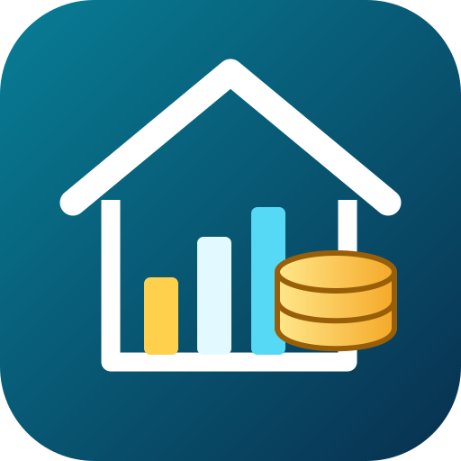

Ingresos y gastos
Registra los movimientos del hogar, consulta el saldo y encuentra operaciones anteriores en el historial.

Android · Finanzas domésticas · Disponible
Controla los ingresos y gastos de tu hogar sin complicaciones. Distingue lo que gastas en comida, descubre adónde se va el dinero y prepara informes profesionales cuando los necesites.
Versión 2.5.2 probada y firmada para Android. Descarga gratuita y sin anuncios.
🔔 Avisos de actualizaciones: suscríbete gratuitamente por correo para enterarte de nuevas versiones. La suscripción es opcional y los correos se revisan antes de enviarse.

Registra los movimientos del hogar, consulta el saldo y encuentra operaciones anteriores en el historial.
Controla los gastos de comida de forma independiente, sin perderlos del balance general.
Categorías personalizadas, comercios y comparaciones entre períodos económicos.
Fija límites de gasto por categoría y recibe avisos visuales al acercarte o superar lo previsto.
Programa ingresos y pagos mensuales, trimestrales, semestrales o anuales.
Exporta informes de un mes, trimestre, semestre, año o varios años, resumidos o detallados.
Conoce las pantallas de inicio, análisis de tu economía y gastos de comida. Las pantallas muestran una sesión de uso de la aplicación.
Estamos incorporando las capturas de la aplicación.
Así se organizan los ingresos, gastos generales y comida. Datos totalmente ficticios, usados solo para mostrar la presentación.
| Categoría | Importe |
|---|---|
| Vivienda | 650,00 € |
| Comida | 386,25 € |
| Suministros | 168,70 € |
| Salud y transporte | 90,80 € |
| Otros gastos | 236,30 € |
Los informes reales incluyen los datos que introduzcas en la aplicación y pueden incorporar movimientos detallados. Puedes guardarlos como PDF o como documento Word editable.
Descarga oficial: descarga Mi Dinero Real 2.5.2 directamente desde esta Biblioteca.
Mi Dinero Real 2 guarda los datos económicos en el dispositivo. Utiliza Internet para comprobar nuevas versiones, sin subir tus movimientos económicos. Las exportaciones de informes y copias de seguridad se realizan cuando tú las eliges.